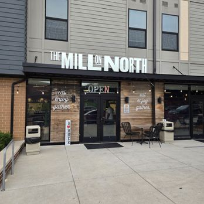

Co-Lab Haus is a group of collaborative professionals with complementary expertise who work together to move complex projects forward. We take ideas, develop them into viable paths, and execute across multiple stakeholders. Clients engage us when the work requires strategy, coordination, accountability, execution, and a team that can carry a project from concept through delivery.
We provide strategic advisory, project management, and cross-sector consulting for government agencies, corporations, and nonprofits. We engage wherever alignment is required and no single party operates in isolation.
We assess the opportunity and develop informed direction before a project is defined. This includes research, evaluating constraints and feasibility, identifying gaps, and exploring alternative approaches. We test assumptions and develop concepts that can be translated into viable projects so resources are committed with clarity.
We define the project in a way that allows it to move. This includes selecting the appropriate model, identifying required stakeholders, and outlining a clear path to execution. The goal is a defined approach that can be implemented across multiple parties.
We bring the right parties together and establish alignment across them. This includes defining roles, setting expectations, and establishing decision-making protocols. The focus is reducing ambiguity so coordination remains consistent as the project progresses.
We manage the project from concept through delivery. This includes coordinating timelines, tracking obligations across stakeholders, and addressing breakdowns as they arise. The work is focused on maintaining progress in environments where responsibility is shared.
We incorporate legal strategy into how the project is organized and executed. This includes advising on agreements, defining relationships, and identifying risk early. We support drafting, negotiation, and enforcement as needed to ensure clarity and accountability among all parties.
We position organizations to pursue and secure the right opportunities. This includes aligning capabilities with project requirements and supporting engagement in institutional and government contracting environments where compliance and readiness are required.
We support implementation during periods of transition. This includes maintaining alignment across teams and partners, stabilizing operations, and ensuring that new processes are adopted and followed.
We act on behalf of ownership to protect the vision, capital, and execution of the project. This includes overseeing third parties, holding vendors and partners accountable to scope, budget, and timeline, and ensuring that decisions align with project objectives.
We oversee the financial aspects of the project and coordinate with financial professionals to ensure alignment between reporting, performance, and decision-making. This includes reviewing financial outputs, identifying inconsistencies or exposure, and ensuring capital is used in accordance with project objectives.
We develop the operational framework required to run the project effectively. This includes defining workflows, establishing standard operating procedures, and creating systems that govern day-to-day execution. The focus is consistency, accountability, and the ability to operate without disruption.
Co-Lab Haus brings demonstrated experience in complex, multi-stakeholder projects spanning economic development and real estate, food entrepreneurship, and community-based initiatives.
West Baltimore's first food hall. A mixed-use development in the Coppin Heights neighborhood converting a former lumber yard into a 7,800 sq. ft. food hall with six minority-owned vendors which sits under a 65 mixed-income apartment building. The project received the 2025 Excellence in Economic Development Award from the Maryland Department of Housing and Community Development.
Founded as Prince George's County's first food hall and one of the first African American-run food halls in the United States. An 8,500 sq. ft. incubator space housing seven vendors in a USDA-designated food desert.
The first of its kind manufacturing baked goods incubator designed and created for emerging bakers. A purpose-built environment that gives small food businesses the infrastructure, resources, and support to grow.
April operates at the intersection of business, law, development, and execution. With over two decades as a Business and Real Estate Attorney and more than 15 years as a Food Entrepreneur, she brings practical experience that extends well beyond advisory, and into the work itself.
Her foundation was built in law enforcement, where she served as a Business, Real Estate, and Bank Fraud White Collar Crimes Investigator and Prosecutor at both the local and federal levels. That environment, one that demanded precision, discretion, and the ability to operate effectively under pressure, shaped how she approaches every project she leads.
As Founder of The Private Practice Law Group, she has advised hundreds of businesses from early-stage ventures to established organizations. As an entrepreneur, she built Baked In Baltimore and DC Sweet Potato Cake into nationally recognized brands, with products distributed through Starbucks, Nordstrom, Wegmans, Safeway, and QVC. She developed the first Black-owned food hall in the United States and continues to lead additional development projects nationally, bringing the same precision she used in federal investigations to every deal she structures and every project she moves forward.
What ties all of it together is a rare ability to move across disciplines without losing depth in any of them. April brings legal rigor to business decisions, operational experience to development projects, and an investigator's instinct to every partnership she enters. She does not simply advise, she leads, structures, and executes. That is what Co-Lab Haus was built to deliver, and she is the reason it can.
April's public service spans several statewide leadership roles. She serves as Chairman of the Department of Commerce's Manufacturing Advisory Board and sits on the Board of Directors for the Regional Manufacturing Institute. She also sits on the Maryland Judicial Nominations Committee and the Maryland Food Center Authority. These appointments reflect both her credibility and the trust the Governor of Maryland and the Secretary of Commerce place in her judgment.
Her company is a Top 100 MBE. She has been named one of Maryland's Top 100 Women, a Top 24 Leader in Law, and an Emerging Leader in Manufacturing. She studied at University of Maryland Eastern Shore, George Washington Law School, and The Georgetown Masters in Real Estate.
Mr. Saxon brings financial rigor and analytical precision to every engagement Co-Lab Haus undertakes. With deep expertise in financial operations, he oversees the integrity of project finances, ensuring records are accurate, performance is clearly reported, and decision-makers have the visibility they need to act with confidence. His work bridges the gap between day-to-day financial activity and strategic oversight, making him a critical anchor in environments where capital accountability and execution are equally important.
Ms. Robinson brings over 20 years of operational leadership to Co-Lab Haus, with a track record built across Fortune 500 environments. She has managed P&L portfolios exceeding $60M, led district operations across 35 locations, and overseen teams of 400+. Her focus within Co-Lab Haus is operational systems, compliance, SOP development, and the coordination structures that allow complex projects to run without disruption.
Avion supports the operational and administrative backbone of Co-Lab Haus, ensuring that communications, scheduling, and coordination across the team and with clients remain organized and responsive. His role keeps projects moving and leadership focused on execution.
Michelle serves as Co-Lab Haus's in-house CPA, bringing the tax expertise and financial advisory judgment that complex projects require. She oversees tax planning and compliance, ensures that financial structures are organized correctly from the start, and advises on the implications of key decisions before they are made. Her presence means clients have certified accounting oversight embedded directly into the work, not added after the fact.
Michael brings over 20 years of construction and development experience to Co-Lab Haus, with a portfolio spanning more than $100 million built and an additional $100 million overseen as an owner's representative. He understands the built environment from both sides: as the contractor responsible for delivery and as the representative protecting the owner's interests. That dual perspective uniquely positions him to manage scope, hold vendors accountable, and ensure development projects are executed to standard, on budget, and without compromise.
Tamekia brings more than 15 years of expertise navigating regulatory environments. She understands how corporations and government environments operate, what compliance and procurement frameworks require, and how to position projects for success within those structures. Her role at Co-Lab Haus is to ensure that regulatory exposure is identified early, government relationships are managed strategically, and projects operating in public or institutional contexts move forward without avoidable friction.
Co-Lab Haus meets projects where they are. Whether you're at early concept or need execution support, we engage where it matters.
Whether you have a project taking shape, an opportunity you're evaluating, or simply want to understand how Co-Lab Haus can engage, reach out and we'll respond directly.
All inquiries are reviewed by April Richardson personally.